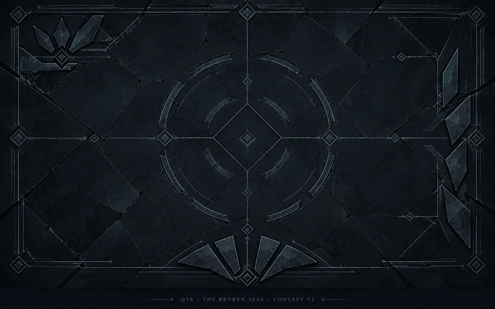
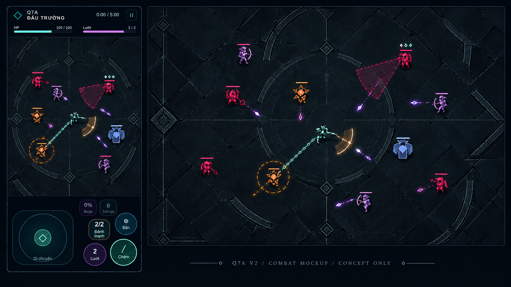
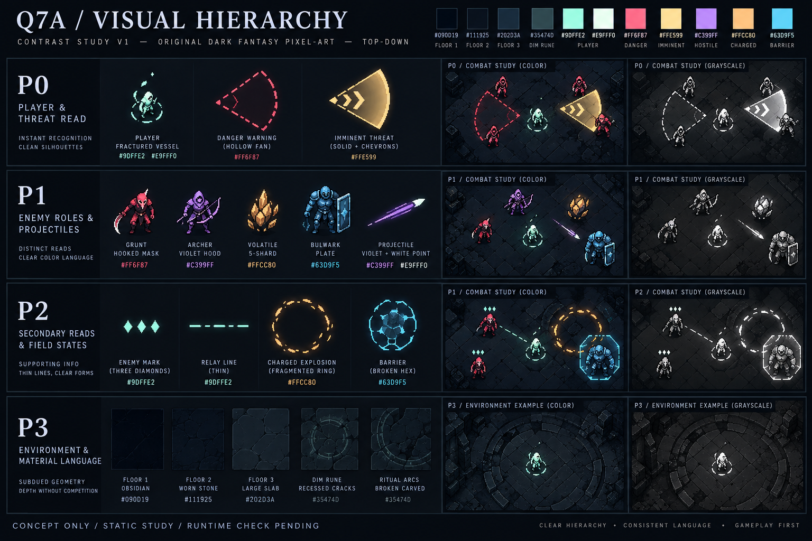
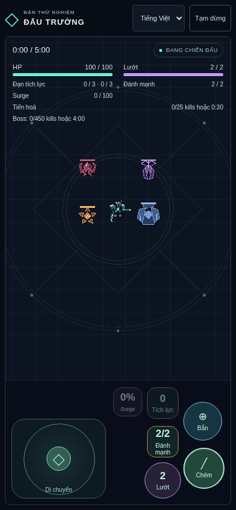
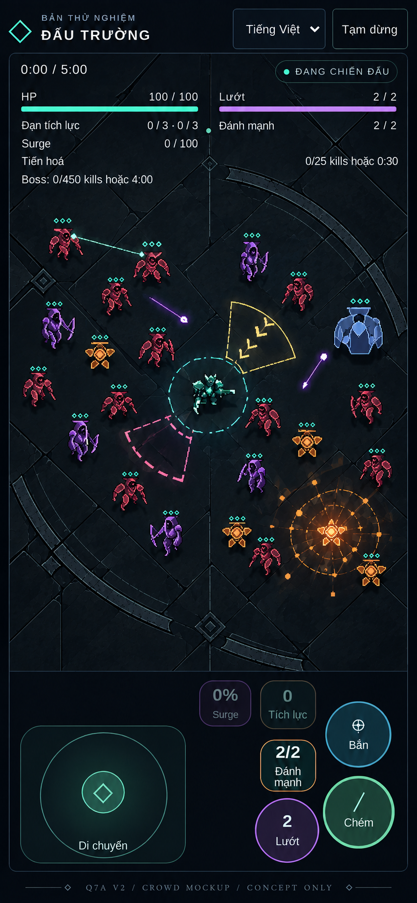
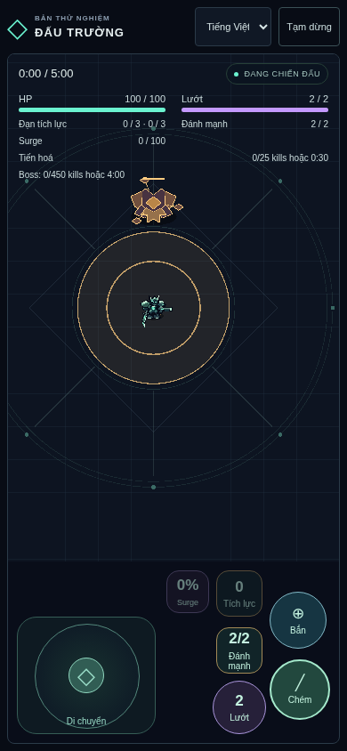
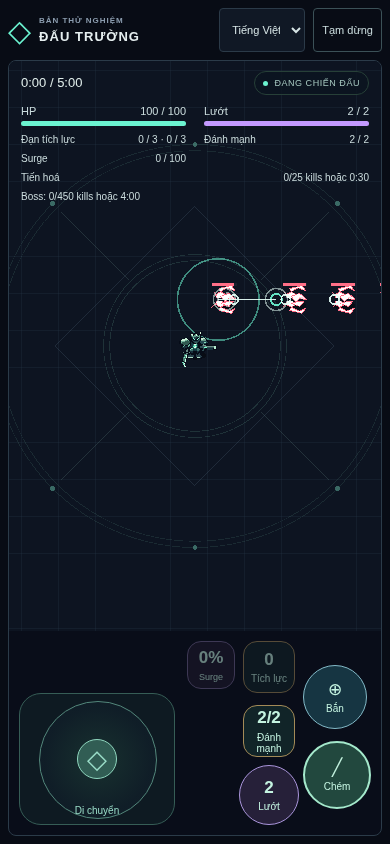

Checkpoint mới do user giao: Q7C · Character & Enemy Art · ACCEPTED — USER PLAYTEST APPROVAL. Q7D · Full Run Experience Polish hiện hành; approval Q7A/Q7B giữ nguyên.
Q7A · Ấn phong bị vỡ
ACCEPTED — USER PLAYTEST APPROVAL · Ngày2026-10-26, user duyệt Q7A sau làm rõ scope chỉ artwork sàn obsidian. Q7B HUD/readability cũng đã được user ACCEPTED (“q7b đã đạt”) trên5ee970e.
Obsidian có mặt cắt lớn, các vòng nghi lễ gãy và ba motif phẳng cố định. Chi tiết sàn chìm dưới player, threat và VFX. So sánh ở kích thước phone; bấm hình để mở bản gốc.
Audit, nguồn/quyền dùng và giới hạn · Prompts · Design contract
01 · Arena concept V2

Hướng material/motif chính. Bevel chỉ là relief nông, không vật cản. Caption ngoài sàn sẽ bỏ nếu tạo runtime texture.
02 · Combat mockup V2

Actor nhỏ, floor tối, khoảng controls ở dưới mobile. Ảnh sinh có sai UI/camera/sprite/VFX; implementation hiện hành vẫn là nguồn đúng, không đổi game cho giống ảnh.
03 · Contrast / palette reference V1

Chỉ bảng màu/hierarchy. Nhân vật vẽ lại, màu Bulwark, fan fill và nhãn sai trong ảnh không thuộc đề xuất triển khai. Grayscale bên phải do ImageGen minh họa; checkbox phía trên dùng CSS grayscale thật cho toàn ảnh.
04 · Crowd V2 cạnh baseline renderer

TRƯỚC — evidence renderer Q3 lịch sử, fixture identity ít quái. Không cùng scene với mockup, không phải đo trước–sau.

ĐỀ XUẤT — ImageGen, khoảng22quái; player/threat/P2 trên floor V2. Không là renderer screenshot. Sai pip states/Barrier/UI, chưa chứng minh combat động.
Baseline renderer: Boss và chain

Boss slam Q3, fixture thật. Giữ geometry/cue hiện hành.

Chain Q4, fixture thật. Pips/relay này là nguồn đối chiếu.
Phạm vi Q7A đã duyệt
Concept V2 và runtime floor-only đã được user duyệt. Checklist bàn giao trước đây: đi giữa/sát rìa, quan sát player và threat khi đông quái, kích Rupture/Detonate/Charged. Không yêu cầu playtest lại Q7A hoặc duyệt lại Q2–Q6. Q7B runtime đã được user accepted trên5ee970e; xem revision hiện hành.
Các hình concept phía trên giữ làm lịch sử visual gate. Runtime evidence ở đầu trang; controls/camera/collision/gameplay giữ nguyên. User đã duyệt runtime Q7A sau deploy; không suy rộng sang Q1 hoặc mọi thiết bị.